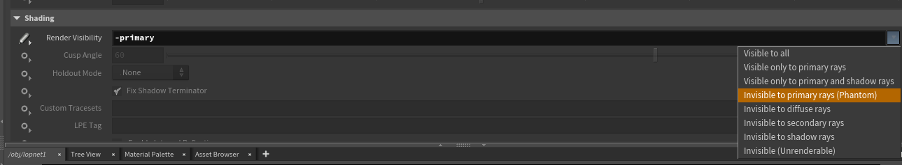
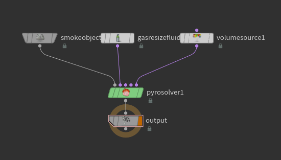
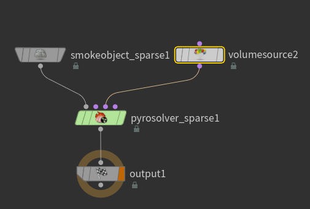

← 部落格 × Harbour
Bomin Kim（特效）


第 5 周
团队成员
2 月 8 日
Bomin Kim（特效）
Caleb Stovall（3D／2D）
Mojie Tang（特效）
Sydney Relkin（合成）
Yiqi Zheng（特效）
SCAD × HARBOR － 第 5 周
大家好，这是我 SCAD × Harbor 部落格的第四周！
导师回馈：
Vi：
-
很高兴看到你们有听进建议
-
镜头 1：背景的环境太暗／构图
-
镜头 2：需要加蒸气吗？
Hailey：
- 拿掉镜头 2，它和镜头 3 一样
- 镜头 3：背景失焦，加入氛围烟雾
- 镜头 6：标题要再拉出来一点
Kyle：
- 平移改成 3D／视差
- 不要太夸张，用缓慢细微的摄影机运动
- 把镜头 2 和 3 合并，从上往下很酷，让摄影机绕著倾倒的部分旋转
- 镜头 3：聚焦在重要的东西，把不重要的推到后面
- 镜头 5：景深／背景也许偏蓝／深度合成泡泡
- 镜头 6：太紧了，把它做到完美
Billy：
- 背景失焦
- 不要直接算出景深
Joleen：
-
镜头 1 从上往下？把火焰和熔化连起来
讨论后，我们决定把镜头 2 和 3 合并成一个有运动的镜头：摄影机往下移，并绕著倾倒中的熔融白金旋转。镜头 2 我也在背景加了蒸气和氛围烟雾，加强工厂的环境感。这是最终的样子，接下来一周我还需要调整环境烟雾。
算图
我测试了好几种不同黏度的熔融白金，想找出最合适的。这个镜头最新的测试中，我选择了黏度 40。
黏度：20
黏度：30
黏度：20
黏度：40
黏度：100
分层：
Caleb 在 Karma 中分离了烟雾层和 beauty 层。我依照论坛文章的步骤做出了结果：使用 Render Geometry Settings 节点，在 Primitives 中选取不可见的物件，并选择「Invisible to Primary Rays (Phantom)」来排除未选取的物件。

环境烟雾：
依照 Fowler 教授的建议，我在 Houdini 中测试了两种烟雾解算器：Smoke Object Sparse 和 Smoke Object，比较它们的速度与烟雾效果。结果显示 Smoke Object Sparse 比 Smoke Object 快很多。


Smoke Object
Smoke Object Sparse
我也测试了不同的环境烟雾效果，并加入灰尘，为倾倒的场景营造身历其境的氛围。
参考：
这是最终的 flipbook。
这是最终的算图。